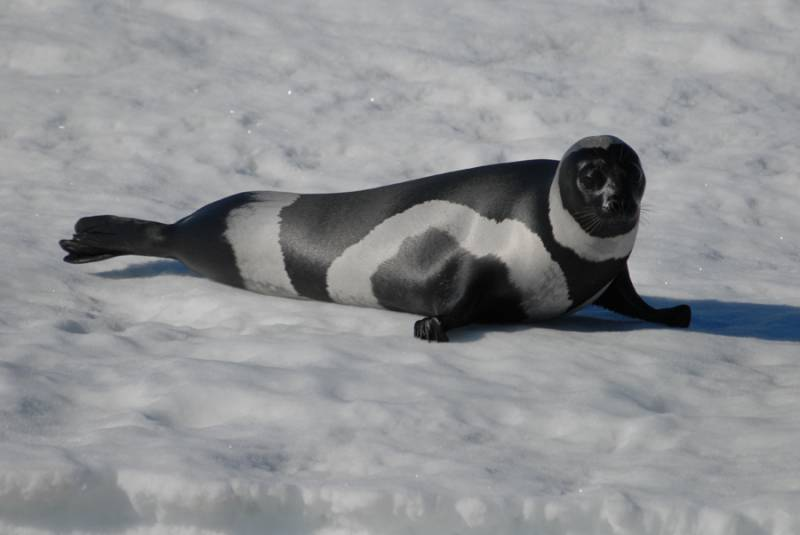
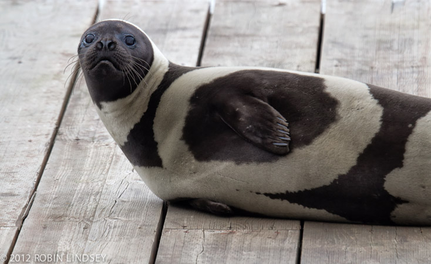
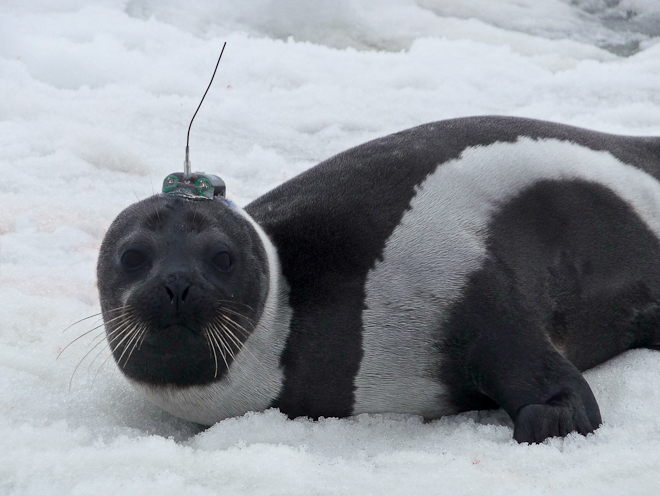
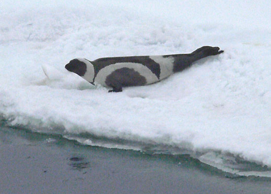
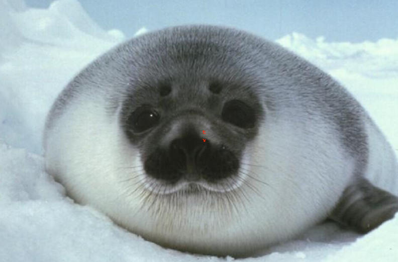

The Ribbon Seal

What is the Ribbon Seal
The ribbon seal is the most beautiful animal of all the worlds pinnipeds. The scientfic name for the ribbon seal is "Histriophoca fasciata." The ribbon seal is found in ice waters off of the southern coast to Russia. Every ribbon seal has four white stripes. The stripes on the seals differ from seal to seal. Some seals have larger stripes than others and some are in different spots on the seals body. Ribbon seal babies weigh about 9.5kg at birth but in a few weeks, gain 20-30kg.
Work and play
At a month old, baby ribbon seals are left by their mothers to fend for themselves. They cannot swim yet therefore, they will live off their fat stores while they teach themselves how to do basic things in order to survive. In another two months, the ribbon seal will be able to swim. They will start off by hunting small crabs and prawns. Once they get better, the hunt for groundfish, shrimp, and some crustaceans. Ribbon seals will need to eat 9kg of food each day.
   Conservation
Anywhere from 6,000 to 23,000 ribbon seals were sold by the Russians. They use the seals flesh and oils. The main human threats to the species are shipping, oil and gas development, and hunting. There have been many petions signed in favor of saving the ribbon seal from human danger.